Training data
Two corpora, built for different jobs. Trajectory supervision needs a few thousand complete reason–act–observe episodes; RL needs only a question, an answer, and a valid starting viewpoint, so it can draw on an order of magnitude more. Every question type below survives the same test: it must still be well posed when the model starts from one view and has to go and find the rest.
- ScanQA3,00052.5%
- MP3D2,00035.0%
- ESI71212.5%
- ScanQA25,56349.6%
- MP3D9,85519.1%
- Curated ScanNet8,59116.7%
- Curated ARKit7,53414.6%
What the supervised episodes are made of
We use GPT-5.4 to generate reason–act–observe trajectories in the same environment the policy acts in. We discard invalid starting views and retain trajectories with correct answers, valid interactions, well-formed reasoning and responses, and sufficient visible scene geometry; MP3D examples must also observe the evidence the question requires. After answer canonicalization the corpus contains 5,712 trajectories, 20,603 rendered observations and 830 scenes.
ScanQA
MP3D
ESI
Curated questions for RL, and why these types
RL requires only a question–answer pair and a valid initial viewpoint, allowing substantially broader training data than trajectory supervision: 51,543 questions from ScanQA, MP3D, and generated QA over ScanNet and ARKitScenes. Those generated QA begin as 53,104 candidates, of which 16,125 survive two filters. A heuristic pass drops anything a single view already answers, anything with degenerate ground truth, and anything phrased as ego-relative left/right — ill-defined once the camera is free to move. An LLM audit then rejects questions whose answer leaks in the prompt, questions too vague to have one answer, and questions whose ground truth is wrong.
-
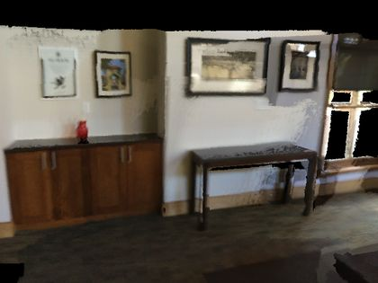
“Is there a sink in the room?” -
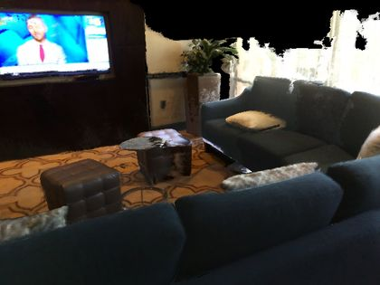
“Which is there more of, pillows or televisions?” -
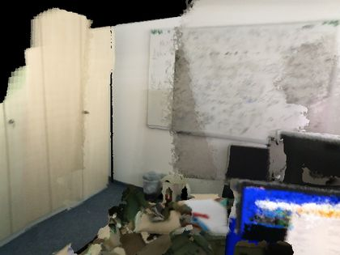
“Which is closer to the window, the books or the cabinet?” -
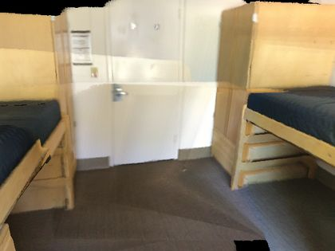
“How many desks are in the room?” -
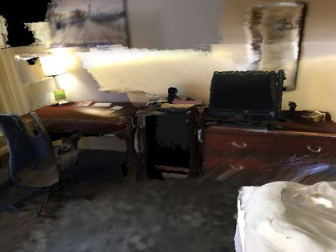
“What color is the desk?” -
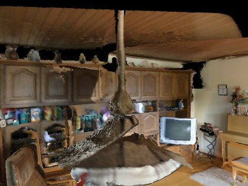
“Which is taller, the sofa or the window?” -
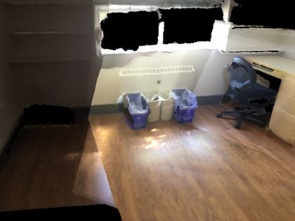
“Which is the largest object in the room, the bed or the dresser?” -
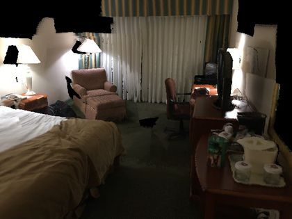
“What is on the desk?”
One kept question per type, each shown with the starting view its episode begins from — rendered through the same tool the policy calls, so this is literally the image the model is handed before it moves. The surviving types share a property that matters for active perception: the answer is a fact about the scene, not about where the camera happens to be, so it stays well defined no matter which viewpoint the policy chooses — while still, as these views show, rarely settled from the initial view alone.
What these questions are rewarded for
The curated questions are usable for RL because they can be scored without a demonstration. GRPO optimizes the whole episode against the end of it alone:
Answer correctness, an interaction term gated on being correct and saturating at \(N_{\max}=12\), and a format penalty. No term references a target viewpoint, action, or trajectory — exploration is credited only through its effect on the final answer.
Real episodes from these corpora
Each card is one ScanQA evaluation episode: the first view the policy was given, a view it chose part-way through, and the view it answered from, with the number of interactions it took. The tag under each answer names what the question asks for; none of these episodes could be settled from the starting view alone.

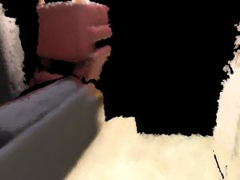
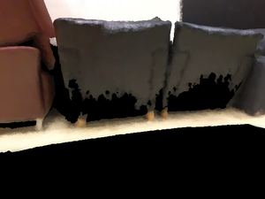
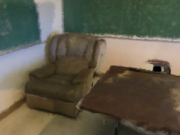
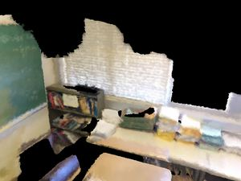

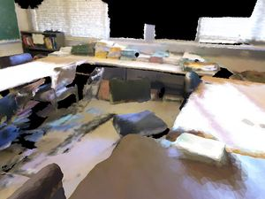
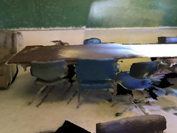
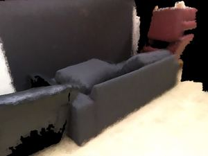
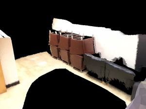
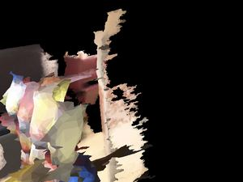
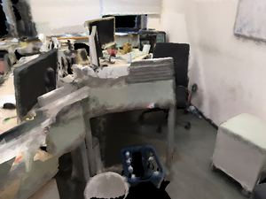
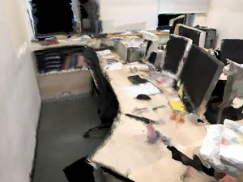
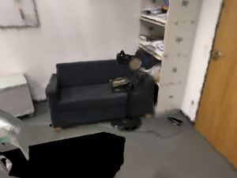
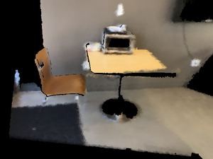
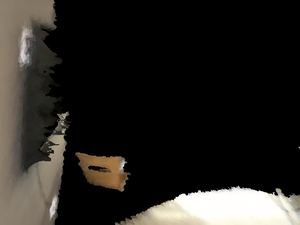
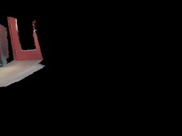
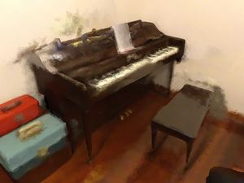
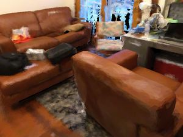
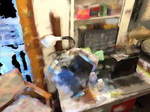

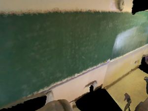
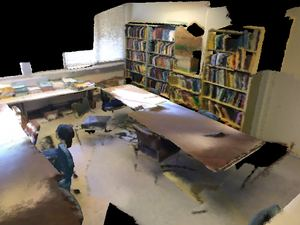
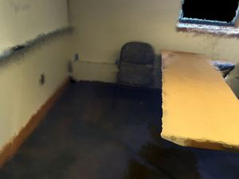
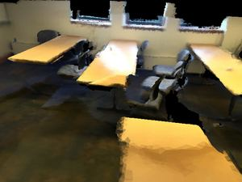
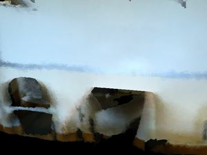

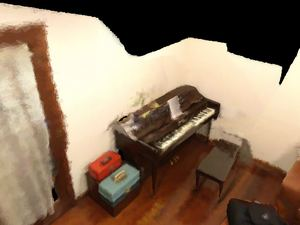

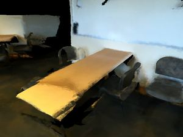
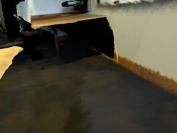
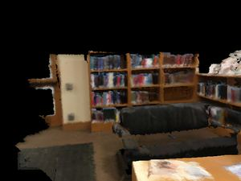
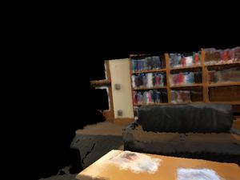
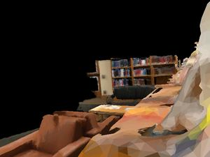